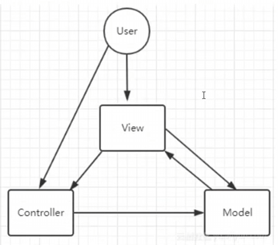
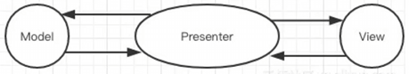
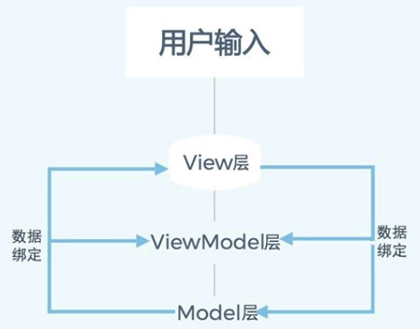
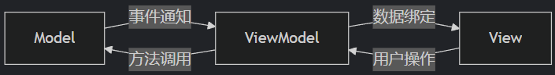

前言
无论有没有接触过框架，大名鼎鼎的MVC一般来说多多少少都听到过
而MVP/MVVM就没那么出名了
无论是MVC还是MVP/MVVM，它们都是
简述：
个人认为三者仅在特性上存在一定的区别，如何实现是自由的且区别不大的 - 三者的主要目的都是用于分离杂糅代码
- 一开始的MVC/MVP被应用于后端分离，后来逐渐演变到前端(MVC/MVVM)
Tip：在前后端与MVX思想无关，只是自然演变 - MVC是最初最传统的思想，而MVP/MVVM是从MVC演变过来的
- MV---Model与View，即数据和视图，本质上三者都是希望用某种方式Model更新后呈现在View上
- MVC的C为
Controller ，C被用来执行M更新代码并用于更新V - MVP的P为
Presenter ，P是M/C之间沟通的唯一桥梁 - MVVM的VM为
View Model ，VM是M的重组，VM收集任意数据，并提供数据绑定 用于自动更新V
分析
MVC
MVC作为最早的版本，所以说架构上会显得"乱"一些，如下图所示：

这两个都是MVC的实现，可以发现沟通方向是不定的
所以说：
Controller是一个
- Controller可以提供
UpdateView()更新View - Controller可以包装Model函数用于控制(执行)
HP=10，点击Btn后由于监听函数的原因，Controller调用Damage(10)更新Model(因为本质上调用的是_model.TakeDamage(10))，同时再次调用UpdateView()进行视图更新
这里比较关键的点在于：
// HPController
public void UpdateView()
{
_hpView.UpdateHPDisplay(_hpModel.CurrentHP, _hpModel.MaxHP);
}
// HPView
public void UpdateHPDisplay(int currentHP, int maxHP)
{
_lblHP.text = $"HP:{currentHP}/{maxHP}";
}
MVP
MVP也是一个比较老的版本了，是在后端时代由MVC演变过来的
如下图所示：

可以发现MVP就显得规整很多，即：
Presenter在思路上和Controller比是恰恰相反的：
- 由于Presenter是"核心"，
具有绝对的掌握权 - Presenter获取View可自行进行Btn绑定
- Presenter可直接调用Model/View提供的函数(在Btn绑定中调用)
回想Controller，Controller是在提供函数而非执行操作
显然，MVP的代码会
MVVM
MVVM可以说是MVC演变的最终完整体，如下图所示：


VM其它方面和C/P没什么区别，重点还是在于数据绑定：
可以说是有
- Model--->ViewModel (绑定)
在Model中添加事件以将Model的变化通知ViewModel - ViewModel--->Model (扩展调用)
扩展Model操作 - ViewModel--->View (绑定)
由BindableProperty注册的事件触发视图更新 - View--->ViewModel (按钮绑定)
Btn绑定，ViewModel提供操作
public class HPModel
{
private int _currentHP;
public int CurrentHP
{
get { return _currentHP;}
private set
{
_currentHP = value;
OnHPChanged?.Invoke(value); // Model--->ViewModel
}
}
}
public class HPViewModel
{
public BindableProperty<int> CurrentHP = new BindableProperty<int>();
public HPViewModel(HPModel model, HPView view)
{
_hpModel.OnHPChanged += UpdateHP; // Model--->ViewModel
CurrentHP.OnValueChanged += UpdateView; // ViewModel--->View
_hpView.OnAttackClicked += OnAttack; // View--->ViewModel
_hpView.OnHealClicked += OnHeal; // View--->ViewModel
MaxHP.Value = _hpModel.MaxHP;
CurrentHP.Value = _hpModel.CurrentHP;
}
public void Exit()
{
_hpModel.OnHPChanged -= UpdateHP;
CurrentHP.OnValueChanged -= UpdateView;
_hpView.OnAttackClicked -= OnAttack;
_hpView.OnHealClicked -= OnHeal;
}
private void OnAttack() // ViewModel--->Model
{
_hpModel.ChangeHP(-10);
}
private void OnHeal() // ViewModel--->Model
{
_hpModel.ChangeHP(10);
}
private void UpdateHP(int newHP)
{
CurrentHP.Value = newHP;
}
private void UpdateView(int newHP)
{
_hpView.UpdateHPDisplay(newHP, MaxHP.Value);
}
}
扩展
MVX本身很简单，就是一个通过X将Model与View分离的框架
但是可扩展点是非常多的，只要原则不变都是可添加进行优化的
BindableProperty
BindableProperty本身就是一种扩展，实现MVVM最简单的方式应该就是它了
Command
Command可以说是最简单最实用的一种了
其作用为
AI提出的扩展点：
- 消息传递机制
- 事件总线
- 响应式流集成(RxJS)
- 领域事件管道
- 数据绑定增强
- 统一绑定语法
- 脏检查优化策略
- 增量更新算法
- 通信协议标准化
- 适配器模式扩展
- 处理管道
- 中间件
- 验证中间件
- 日志中间件
- 缓存中间件
- 转换中间件
- 代码自动生成
- 通信监控工具/快照/历史回放/因果追踪
- 优化
- 批量更新
- 差分传输
- 预取缓存
- 懒加载